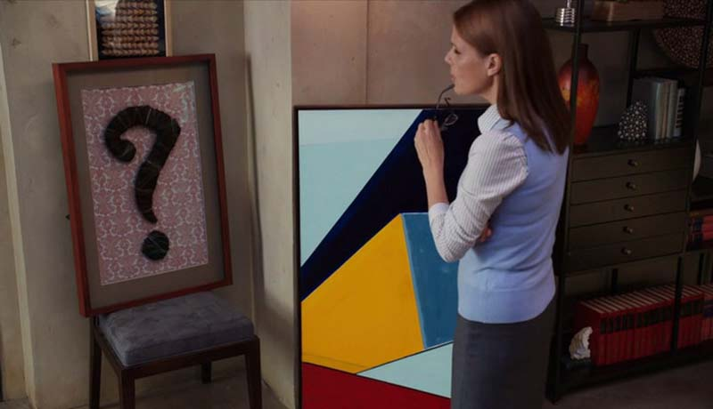
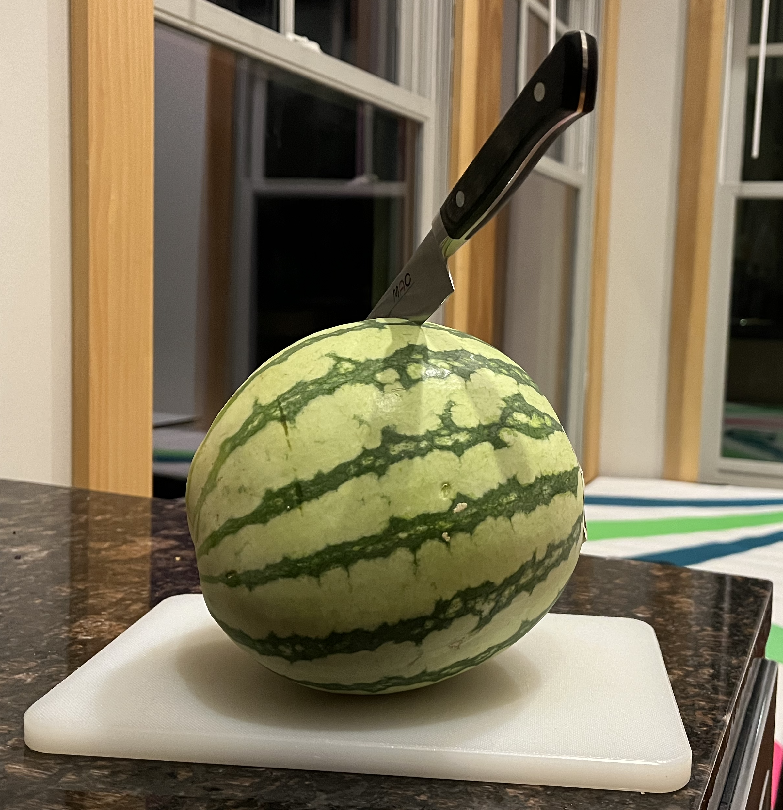

\[ y_1 \ldots y_m \qqtext{ is the standard notation.} \]
Step 1. We define our population.
Step 2. To make our plots nice, we calculate x and y ‘scales’ describing the grid we want.
Step 3. We plot their preferences. What does the \(\color{gray} x\)-coordinate here mean?
… is the proportion of these people who prefer B, i.e. who have \(y_j=1\).
This could be pretty easy because we’ve just looked at all the ys.
But we’re going to make it hard for ourselves by acting as if we haven’t.
This practice of fake data simulation is an important tool when understanding methods.
Because it’s fake, we get to poll the whole population so …
If we’re not satisfied with that distribution, that’s evidence it’s a study we shouldn’t be running.
Once we’ve done this for a few study designs and seen what works — or at least what doesn’t,…
… we’ll choose one to use on our actual population. One that, according to plan, hasn’t been polled yet.
If you’re not convinced this is a good idea, check out what Andrew Gelman has to say about it.
\[ \text{estimand} = \frac{1}{m}\sum_{j=1}^m y_j \]
\[ Y_1 \ldots Y_N \qqtext{ is the standard notation.} \]
\[ \text{estimator} = \frac{1}{N}\sum_{i=1}^N Y_i \qqtext{ where } Y_1 \ldots Y_N \qqtext{ is our sample } \]
Why \(Y_i\) and \(y_j\)?
We’re going to repeat the process this many times.
R times on our population by mapping our function over a list containing R copies the population.Q. Why are there four bars?
In R, this a one line change to the sampling code.